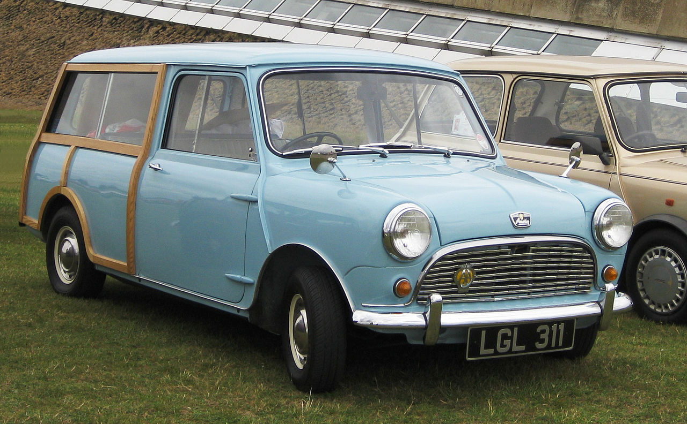

история бренда
В 1952 году директор Austin Motor Company Леонард Лорд произвёл давно планировавшееся слияние с компанией Morris Motors, которой он руководил в начале 1930-х годов. В результате была образована новая компания — British Motor Corporation. Произошедший в 1956—1957 годах Суэцкий кризис продемонстрировал реальность перебоев поставки нефти. На некоторое время продажа бензина для потребителей в Великобритании была нормирована[2]. Перед инженерами многих стран встал вопрос о необходимости разработки сверхэкономичного автомобиля. В 1956 году Леонард Лорд в руководимой им корпорации создал рабочую группу из 8 человек (2 конструктора, 2 студента инженерных специальностей и 4 чертёжника), возглавил которую инженер и дизайнер Алек Иссигонис. Перед командой проекта, названного ADO-15 (англ. Amalgamated Drawing Office project number 15; Объединённое конструкторское бюро проекта № 15), была поставлена чёткая задача — создать автомобиль настолько миниатюрным, насколько это возможно. Были заданы параметры внешних габаритов: 3×1,2×1,2 м. Второй целью было расположить в нём 4 взрослых людей и их багаж. Наиболее важным в решении этих задач стала идея поперечной компоновки четырёхцилиндрового рядного двигателя с водяным охлаждением и размещения под ним коробки передач, интегрированной с масляным картером. В результате этого салон стал занимать не менее 80 % от площади проекции автомобиля[3]
Компоновка «Мини»
Austin Seven Countryman (кузов универсал)
Первый прототип, названный за его цвет «The Orange Box», был готов к 1957 году, но испытания и доработки заняли ещё почти два года. Первые автомобили были запущены в производство в мае 1959 года, но до августа в продажу они не поступали для создания необходимых запасов в дилерских центрах. На создание совершенно нового автомобиля от идеи до серийного производства ушло 2 года 5
17 июня 1959 года председатель BMC Леонард Лорд впервые публично раскрыл некоторые подробности предстоящей автомобильной премьеры. Он заявил, что новые автомобили прошли самые разнообразные испытания и готовы к выпуску. Корпорацией подготовлены новые производственные площади и оборудование с использованием самых современных технологий. Объём инвестиций превысил 10 миллионов фунтов стерлингов. При этом Лорд подчеркнул, что достаточно популярные предыдущие модели Austin A40 и Morris Minor останутся в производстве.
К концу 1959 года было выпущено почти 20000 автомобилей. Первый опыт эксплуатации выявил ряд недостатков автомобиля. Главный из них — практически полное отсутствие гидроизоляции, в сильный дождь коврики салона намокали моментально, при напольном расположении стартера это было большой проблемой. Недоработки были оперативно устранены и практически не повлияли на продажи автомобилей. В 1960 году выпускалось уже 3000 машин еженедельно. В сентябре была предложена модификация с кузовом универсал Morris Mini Traveller и Austin Seven Countryman.

В 1966 году British Motor Corporation поглотила Jaguar. Вновь образованный British Motor Holdings объявил о необходимости введения жёсткого контроля за расходами, который среди прочего предусматривал сокращение 10000 рабочих мест. Это повлекло волну забастовок, самой серьёзной из которых оказалась забастовка перевозчиков готовых машин. СМИ публиковали фотографии заброшенных аэродромов переполненных автомобилями, которые не могли быть доставлены к дилерам.
В 1968 году была разработана и выпущена ещё одна модель — Mini Clubman с удлинённым кузовом типа хэтчбек и двигателем объёмом 1100 см³. Однако, из-за отвлечения большого количества финансовых ресурсов на реструктуризацию вновь обретённых подразделений, модель не была тщательно доработана и не получила широкой рекламной поддержки. В этом же году в результате настоятельного лоббирования правительства Великобритании происходит создание автомобилестроительного гиганта British Leyland, куда входит и BMH. Прекращается выпуск Mini Moke, так как он совершенно не соответствует климату страны. Открывается совместное производство Mini на заводе Authi в Испании: рынок этой страны оценивается как самый быстрорастущий в западной Европе.
19 июня 1969 года двухмиллионный Мини сошел с конвейера. В августе прекращается производство Riley Elf и Wolseley Hornet, общий объём которых не превысил 60 000 единиц. В этом же году на экраны мира выходит фильм «Ограбление по-итальянски» (англ. The Italian Job). Героями этой картины были не только Майкл Кейн и Ноэл Кауард, но и автомобили Mini Cooper, с помощью которых удалось создать самую большую дорожную пробку в истории кинематографа. В октябре начинается производство Mini Mark III. Кроме того, руководители холдинга понимая, что разнообразием названий они конкурируют внутри класса сами с собой, упразднили названия Austin Seven и Morris Mini Minor. Теперь все автомобили, вне зависимости на каком заводе они были выпущены, назывались просто Mini.
В 1986 году с конвейера сходит пятимиллионный Mini. В этом же году British Leyland переименована в Rover Group. Эта государственная компания в 1994 году была продана со всеми сопутствующими правами концерну BMW.
В 2000 году из-за регулярных убытков BMW продал подразделение Land Rover американской компании Ford, а производственные площади Mini перевёл в отдельное, вновь образованное дочернее общество. Выпуском четырёх специальных модификаций заканчивается производство старой модели Mini.
В следующем году руководством BMW старый автозавод в Оксфорде был обновлён, и начался выпуск новых моделей MINI (пишется заглавными буквами для отличия от классической Mini).В 2003 году на экраны выходит ремейк фильма 1969 года «Ограбление по-итальянски» с Марком Уолбергом, Джейсоном Стейтемом, Шарлиз Терон и Эдвардом Нортоном в главных ролях. Новый MINI играет в фильме немаловажную роль.
В 2010—2011 годах создаётся новая модель ретро автомобиля — Mini Countryman.
В середине 2014 года модельный ряд Mini состоял из 9 основных моделей, не считая спортивные модификации JCW и специальные версии. Но решением руководства компании с 2015 года модельная линейка будет сокращена всего до 5 моделей.[6]